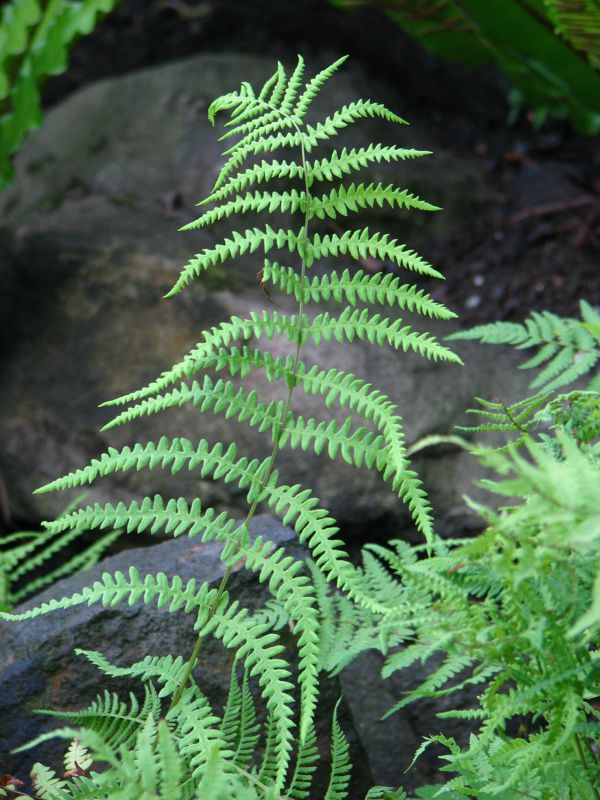

Sumpffarn
Thelypteris palustris
In Verlandungszonen der oberschwäbischen Seen und Weiher wächst der Sumpflappenfarn. Im Bereich des Pfrunger Riedes gedeiht er im Großen Trauben, im Tisch und am Ufersaum des Lengenweiler Sees. Besondere Kennzeichen: Gelbgrüne schlanke Wedel mit zarten, einfach gefederten Blättern.